Table of Contents
Prototype for monitor the micro-climate conditions in agriculture. Collecting data from orchard/vineyards with purpose to support/help/extends the decisions in deals with pests/diseases.
Vinode
View archived data: https://lepavida.iot.novagorica.eu
Issue
- Fight the danger of downy mildew that in recent years has created serious damage across vineyards
- Adopt a scientific instrument to support decisions in order to carry out targeted interventions in the vineyard
Solution
IoT (Internet of Things) system which consists of interconnected devices that operate and automatically communicate over long distances thanks to the use of the LoRaWAN technology.
- LoRaWAN device with sensors: that measure, in real time, the micro-climatic conditions in the vineyard (responsible for fungal diseases such as downy mildew) and the physio-pathological status of the plant
- LoRaWAN Gateway: collection and transmission of data detected by the wireless sensors
The LoRa technology makes it possible to overcome the problem of distance and “physical interference”, two common conditions when you consider the nature of the viticultural land, very often characterized by slopes, wild vegetation and hilly landscapes.
Monitor the vineyard in real time and continuously, as well as the storage of the historic data, which will be crucial for the organization and management of the vineyard, not only of the current season but also of those to come.
Project example with MicroPython on esp-32 (lopy) to collect data (weather, soil, leafs..) on micro-locations.
Overview
- Device
- The main measurements unit for taking measurements, logging and sending data. Powered with LiPo battery and optional solar power.
- Antenna
- It's part of device and responsible for transmitting and receiving data from LoRaWAN network gateways
- Led
- On device cover is Led indicator active only in when running in development mode
- Connectors
- Device is equipped with four (4-Pin) circular connectors for sensors and one (2-Pin) circular connector for solar power supply.
- USB External
- It's USB socket on device cover, used as programming port or external power supply (example is Power bank)
- Shield
- Holding and protecting ambient sensors from environment. Contains 3 sensors: * Air Temperature (Celsius) * Air Humidity (relative %H) * Light (lux)
- Leaf sensor
- Getting measurements of leaf wetness on TOP/BOTTOM in (%)
- Soil Moisture
- Getting measurements of soil capacitance in (%) and temperature in (℃ )
- Solar panel:
- It's 3.5W solar panel responsible for providing power supply
Specifications
- 1x Air temperature and relative humidity sensor
- 1x Barometric Pressure sensor
- 1x Luminosity sensor
- 1x Leaf wetness sensor
- 2x Soil moisture humidity and temperature sensor
- 1x Internal temperature sensor
- 1x Internal humidity sensor
- Solar panel with battery charger
- Data logger with internal data storage
Ports
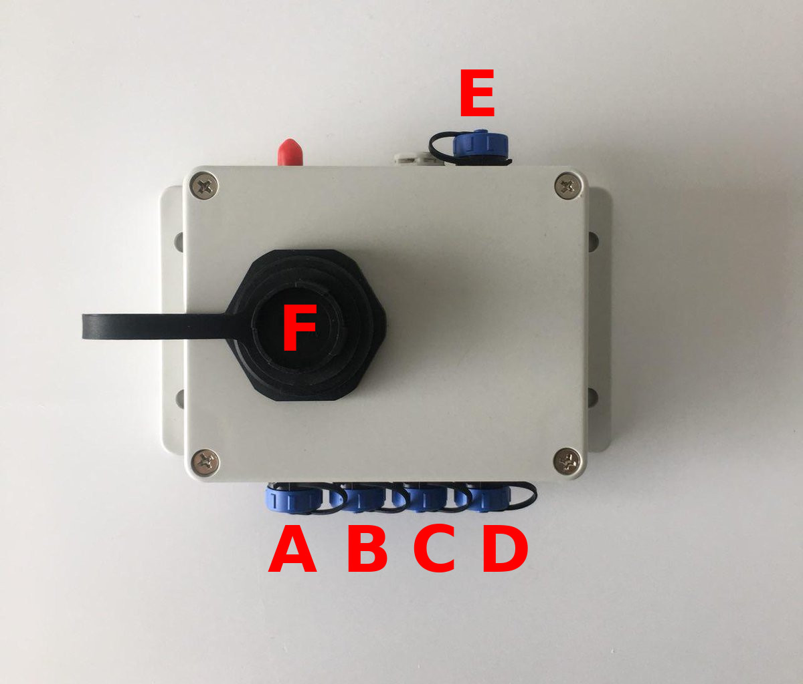
| Socket | Type | Description |
|---|---|---|
| A | I2C | Shield connector |
| B | I2C | Soil 1 |
| C | I2C | Soil 2 |
| D | ADC | Leaf |
| F | USB | USB socket (5V) |
| E | 5V | Solar |
Note
The sensors must follow the connectors types. Sensors comunicating over I2C, they can be attached to any port (1-3), the 4th port is only for Leaf sensor!
Measurements
APPID - mqtt username
APPKEY (default) - mqtt password
Example config:
MQTT_BROKER_PORT = 8883
MQTT_BROKER_URL = 'eu.thethings.network'
MQTT_USERNAME = <USERNAME>
MQTT_PASSWORD = 'ttn-account-v2.<CHANGE-WITH-KEY>'
MQTT Topic all devices
'<CHANGE-WITH-APP_ID>/devices/+/up'
MQTT Topic specified devices
'<CHANGE-WITH-APP_ID>/devices/<CHANGE-WITH-DEVICE_ID>/up'
Example playload fields:
{
"ahum": 0,
"alight": 0,
"atemp": 0,
"bat": 4.732,
"ihum": 68.83,
"ilight": 0,
"ipress": 1002,
"itemp": 28.28,
"lwbottom": 1,
"lwtop": 0,
"mcapa1": 17,
"mcapa2": 14,
"mtemp1": 27.2,
"mtemp2": 26.7
}
Message Payload
Data transmitted over LoRaWAN is decoded into bytes before sending over the air
| Index | Name | Bytes | Numeric | Description |
|---|---|---|---|---|
| 1 | alight | (3) | int | Ambient Light |
| 2 | atemp | (2) | float | Ambient Temperature |
| 3 | ahum | (2) | float | Ambient Humidity |
| 4 | mcapa1 | (2) | int | Moisture #1 Capacitance |
| 5 | mtemp1 | (2) | float | Moisture #1 Temperature |
| 6 | mcapa2 | (2) | int | Moisture #2 Capacitance |
| 7 | mtemp2 | (2) | float | Moisture #2 Temperature |
| 8 | lwtop | (2) | int | Leaf Wetness Top |
| 9 | lwbottom | (2) | int | Leaf Wetness Bottom |
| 10 | bat | (3) | float | Pysense Voltage |
| 11 | temp | (2) | float | Pysense Temperature |
| 13 | hum | (2) | float | Pysense Humidity |
| 14 | light | (3) | int | Pysense Light |
| 15 | press | (3) | int | Pysense Pressure |
Change log
| Version | Date | Description |
|---|---|---|
| v001 | 06.21.2017 | Prototype |
| v002 | 28.08.2017 | Prototype |
| v003 | 21.09.2017 | Prototype |
| v1.0 | 26.11.2017 | Alpha |
| v1.0 | 30.01.2018 | Beta |
| v1.0 | 21.02.2018 | RC |
| v2.0 | 27.08.2019 | RC_1 |
| v2.1 | 07.09.2019 | RC_2 |
Prototype
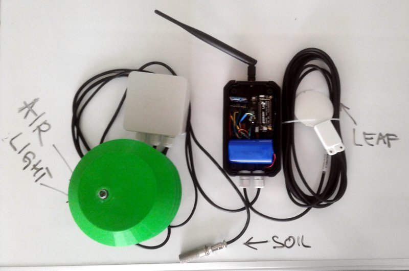
Release - vinode001
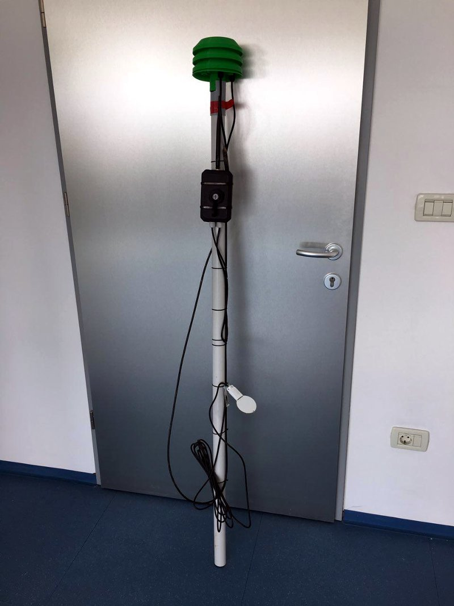
Release - vinode002
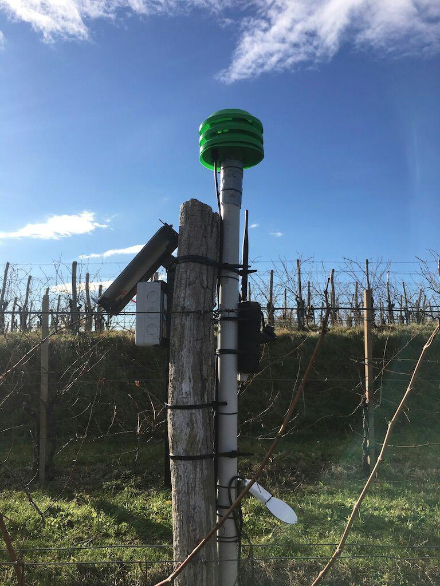
Release - vinode003
Version 1.0
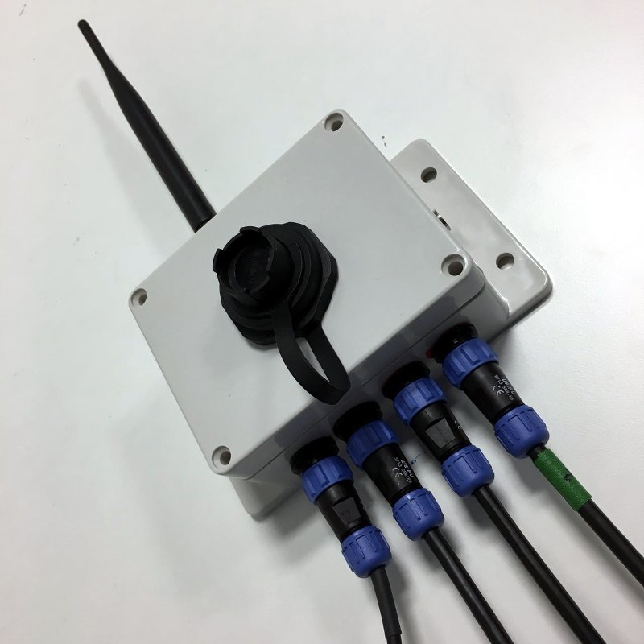
Release - vinode-v1.0.0-alpha
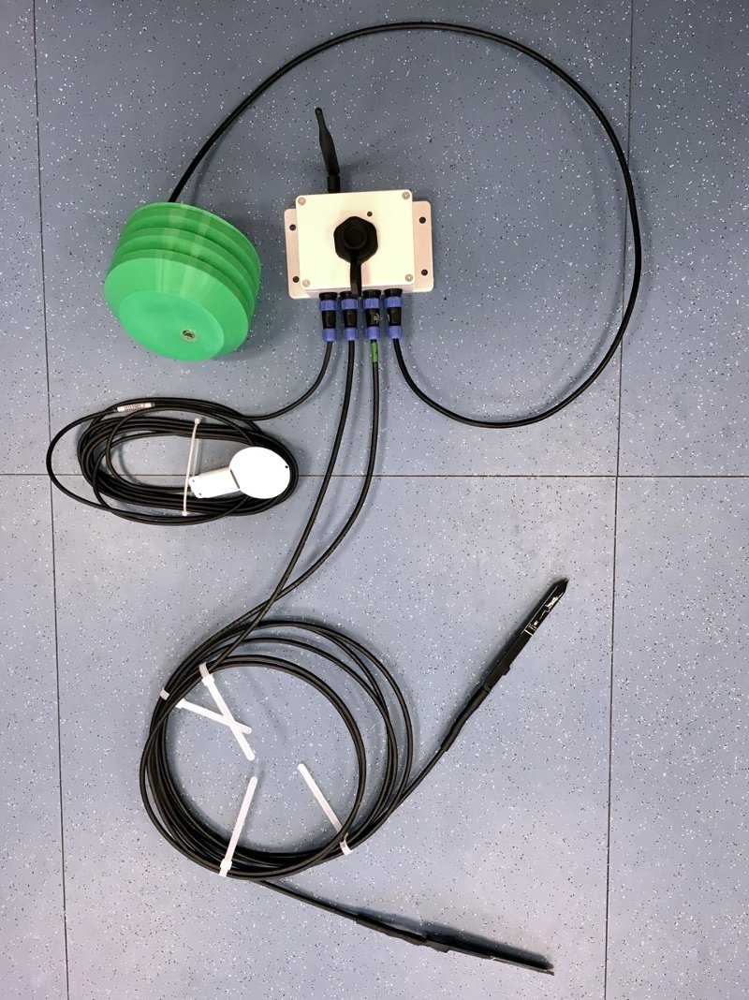
Release - vinode-v1.0.0-alpha with sensors
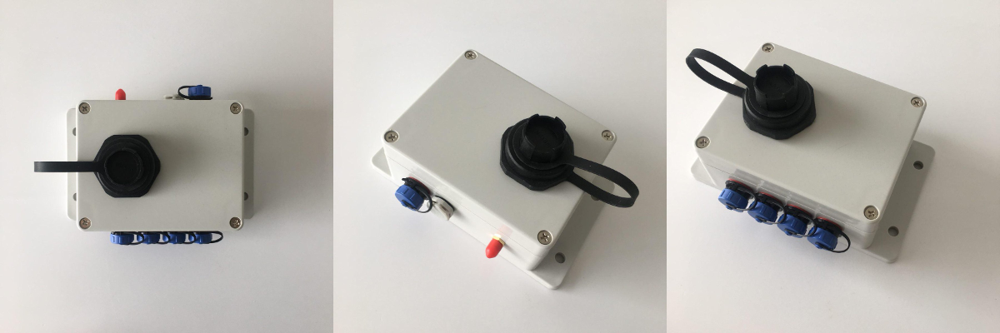
Release - vinode-v1.0.0-beta
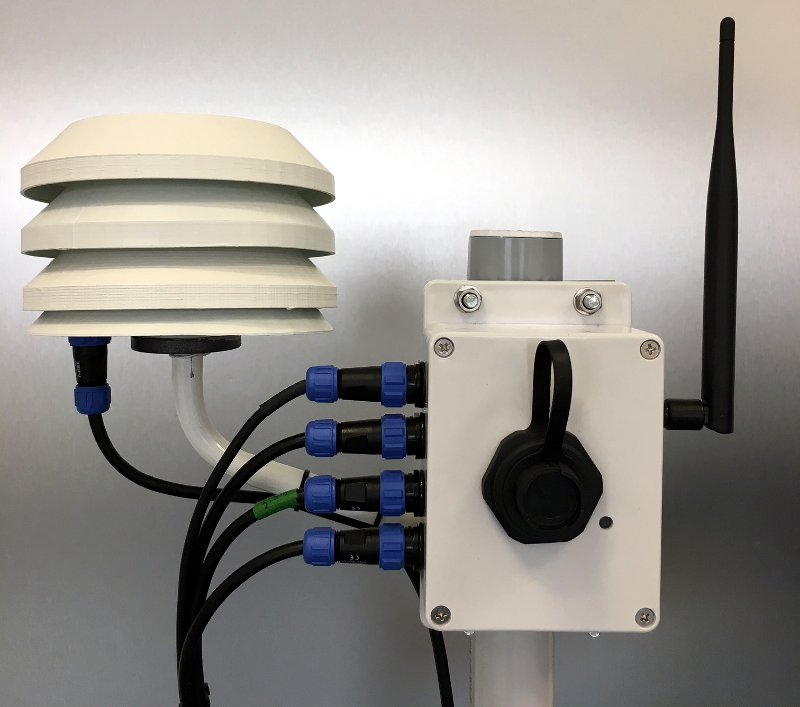
Release - vinode-v1.0.0-beta assemble
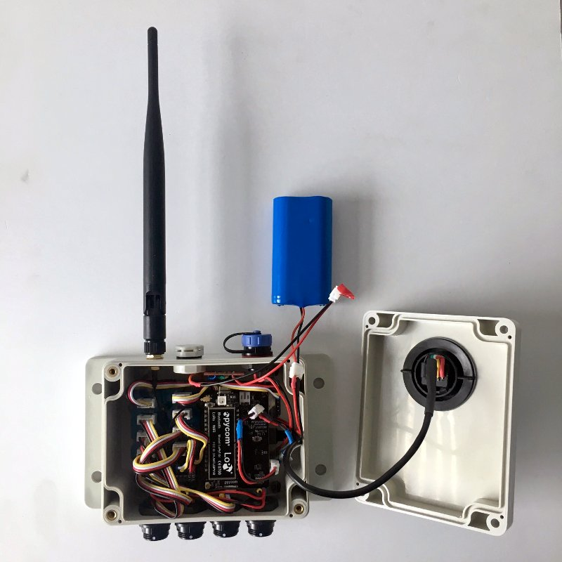
Release - vinode-v1.0.0-rc
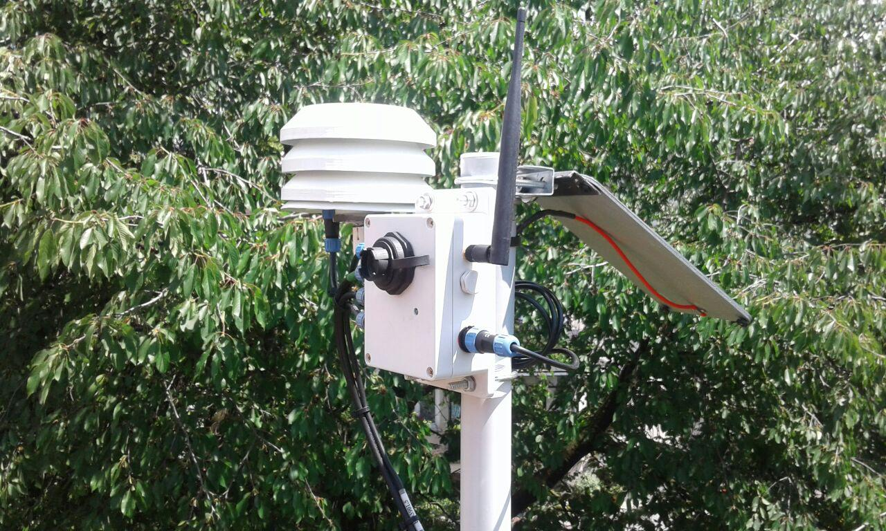
Release - vinode-v1.0.0-rc1
Stand Version 1.0
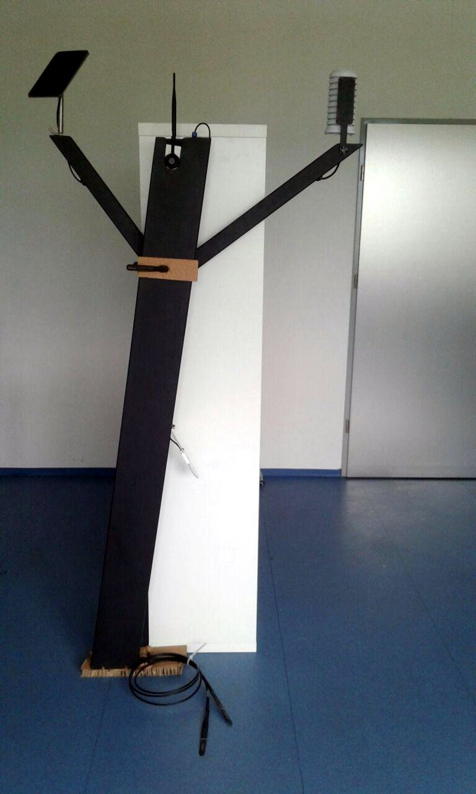
Release - vinode-stand-v1.0.0